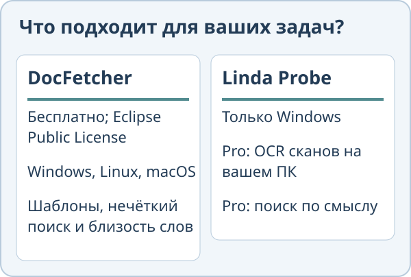
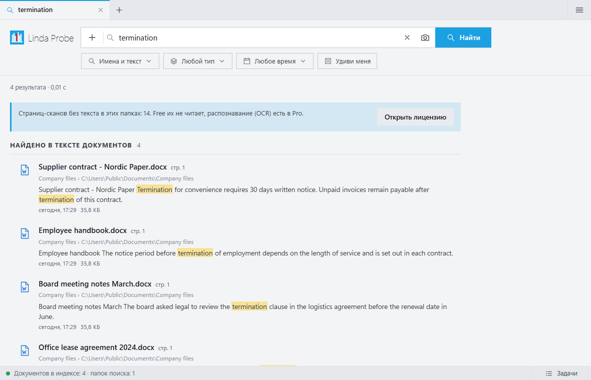

Linda Probe или DocFetcher
Обе программы ищут текст внутри документов на вашем компьютере. Они подходят разным людям, и кому-то лучше подойдёт DocFetcher. Сравнение основано на публичном сайте DocFetcher по состоянию на 30 октября 2026 года.
Выбирайте DocFetcher, если
Вам нужен открытый код (Eclipse Public License), вы работаете не только в Windows, но и в Linux или macOS, либо вам важны шаблоны, нечёткий поиск и поиск по близости слов. У авторов также есть коммерческие DocFetcher Pro и DocFetcher Server.
Выбирайте Linda Probe, если
Вы работаете в Windows и в папках есть сканы PDF, либо вы часто помните, о чём был документ, но не точные слова. Probe Pro распознаёт сканы с помощью OCR на вашем ПК, ищет по смыслу и находит фото по описанию или образцу. В обзоре DocFetcher не перечислены встроенный OCR и поиск по смыслу; эти возможности мы не тестировали.

Чего нет в Linda Probe
Код закрыт, программа работает только в Windows 10 и 11. Бесплатная версия ищет только по именам и точным словам. Для OCR и поиска по смыслу нужен Probe Pro, активированный платным или подарочным лицензионным ключом. Установщик пока не подписан, поэтому Windows SmartScreen может показать предупреждение. На плохих сканах и рукописном тексте OCR ошибается.

Цена
Linda Probe Free предназначен для личного некоммерческого использования. Probe Pro Personal стоит 10 USD разово для одного указанного пользователя на 3 устройствах; Team: 30 USD разово для 10 указанных пользователей на 20 устройствах. Лицензии распространяются на купленную версию и исправления; новые основные версии или модели могут потребовать оплаты. Organization стоит 500 USD в год для одной организации на одной площадке, до 200 устройств, и автоматически продлевается до отмены. Налог и итоговая сумма показываются до оплаты. Для Personal и Team можно запросить полный возврат в течение 14 дней.
DocFetcher бесплатен и имеет открытый код под Eclipse Public License. DocFetcher Pro и DocFetcher Server: отдельные коммерческие продукты.